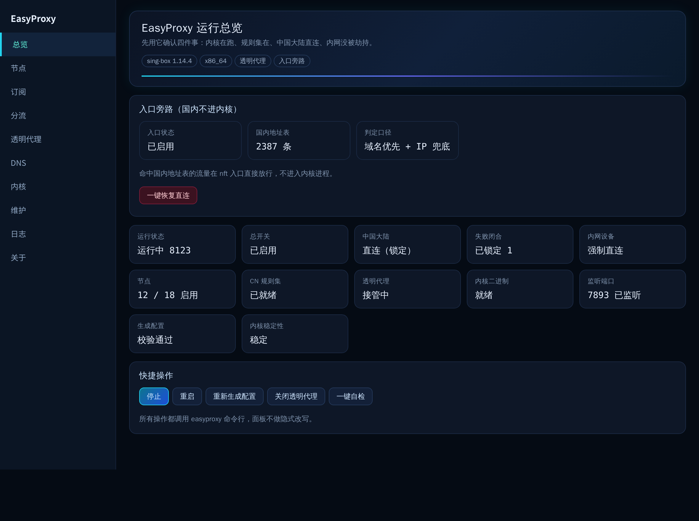

README 草图 · 第 1 屏（标题 + 描述 + 真实面板界面）
OpenWrt / ImmortalWrt 上的中文代理管理系统。装一次，导入订阅就能用。
一条命令装好「面板 + sing-box + dae」，之后在 LuCI 的 服务 → EasyProxy 里全程中文操作；不开网页时，SSH 里 easyproxy-manager.sh 有十项菜单，含上不了网时的「紧急恢复直连」。
三条原则写死在代码里，不是开关：国外走代理要顺、国内流量不进内核、内网设备完全不受影响。

总览页：顶部是运行总览，紧接着「入口旁路（国内不进内核）」卡片，下面 12 格状态、快捷操作。